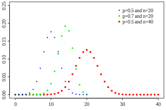
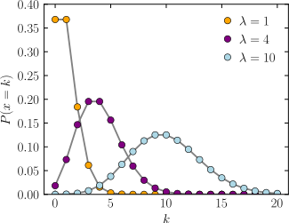

El problema presenta a una empresa de negocios que tiene una demanda de cierto
articulo por una distribucion binomial con parametros de:
- n = 6
- Theta = 1/2
El tiempo de la entrega esta definida por una variable Poisson con los parametros.
- Lambda = 6
El costo de mantenimiento por unidad es de Bs.1 por dia y el costo de pedido es de Bs. 50 por cada pedido. Se tienen 2 politicas.
- Politica 1
- Politica 2
Realizar un pedido cada 8 dias hasta tener 30 articulos en inventario.
Realizar un pedido hasta un maximo de 30 articulos cuando el nivel de inventario sea menor o igual 10.
¿Cual de las politicas es mas economica?
- Distribucion binomial
- Distrubucion Poisson
La distribucion binomial es una distribucion de probabilidad discrete que cuenta el numero de exitos en una secuencia N ensayos independientes entre si con una probabilidad fija de ocurrencia de exito de ocurrencia de exito de ensayos. 
La distribución de Poisson es una distribución de probabilidad discreta que se aplica a las ocurrencias de algún evento durante un periodo determinado. Es decir, es una distribución de probabilidad discreta en la que solo es necesario conocer los eventos y cuál es su frecuencia media de ocurrencia para poder conocer la probabilidad de que ocurran. 